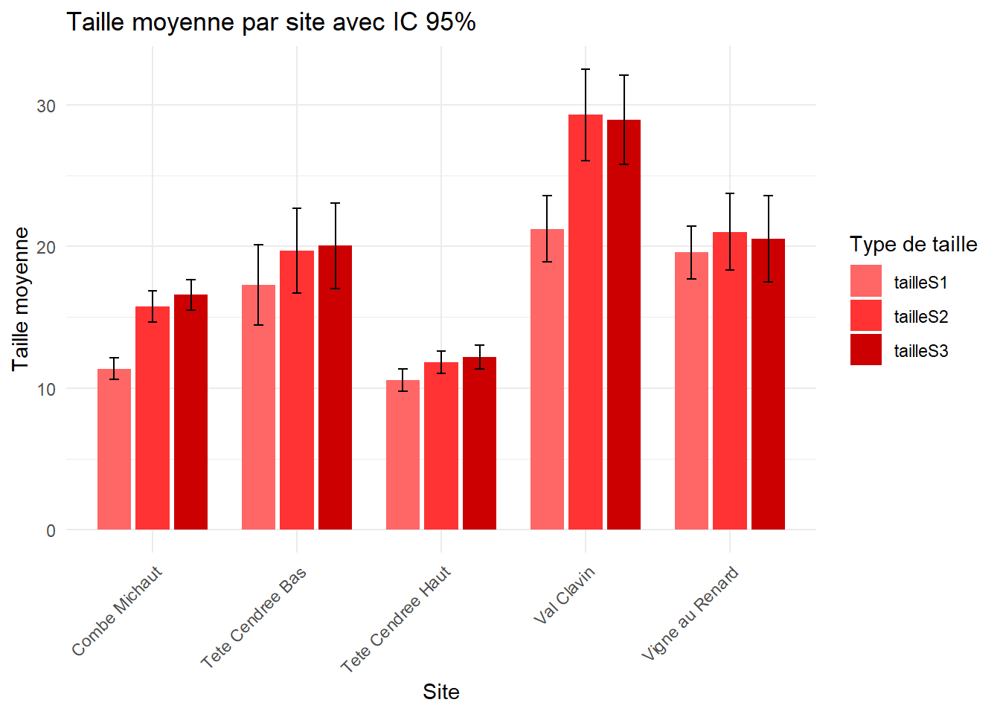
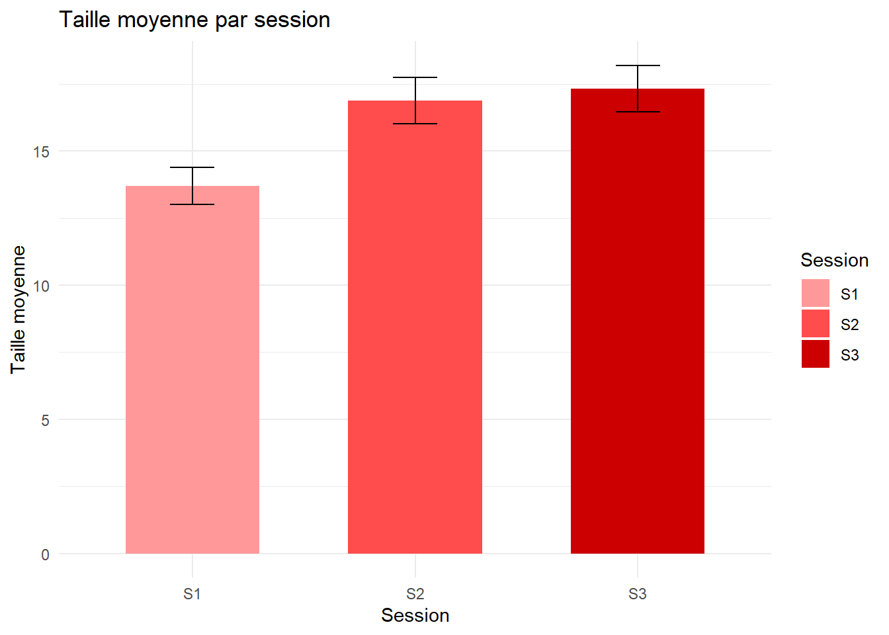

── Attaching core tidyverse packages ──────────────────────── tidyverse 2.0.0 ──
✔ dplyr 1.1.4 ✔ readr 2.1.5
✔ forcats 1.0.1 ✔ stringr 1.5.2
✔ ggplot2 4.0.0 ✔ tibble 3.3.0
✔ lubridate 1.9.4 ✔ tidyr 1.3.1
✔ purrr 1.1.0
── Conflicts ────────────────────────────────────────── tidyverse_conflicts() ──
✖ dplyr::filter() masks stats::filter()
✖ dplyr::lag() masks stats::lag()
ℹ Use the conflicted package (<http://conflicted.r-lib.org/>) to force all conflicts to become errors
library(ggalluvial)
Warning: le package 'ggalluvial' a été compilé avec la version R 4.5.2
library(MuMIn)
Warning: le package 'MuMIn' a été compilé avec la version R 4.5.2
library(lme4)
Warning: le package 'lme4' a été compilé avec la version R 4.5.2
Le chargement a nécessité le package : Matrix
Attachement du package : 'Matrix'
Les objets suivants sont masqués depuis 'package:tidyr':
expand, pack, unpack
library(stats)library(plotly)
Warning: le package 'plotly' a été compilé avec la version R 4.5.2
Attachement du package : 'plotly'
L'objet suivant est masqué depuis 'package:ggplot2':
last_plot
L'objet suivant est masqué depuis 'package:stats':
filter
L'objet suivant est masqué depuis 'package:graphics':
layout
library(ggrepel)library(ggpmisc)
Warning: le package 'ggpmisc' a été compilé avec la version R 4.5.2
Le chargement a nécessité le package : ggpp
Warning: le package 'ggpp' a été compilé avec la version R 4.5.2
Registered S3 methods overwritten by 'ggpp':
method from
heightDetails.titleGrob ggplot2
widthDetails.titleGrob ggplot2
Attachement du package : 'ggpp'
L'objet suivant est masqué depuis 'package:ggplot2':
annotate
library(MASS)
Attachement du package : 'MASS'
L'objet suivant est masqué depuis 'package:plotly':
select
L'objet suivant est masqué depuis 'package:dplyr':
select
Le chargement a nécessité le package : carData
Attachement du package : 'car'
L'objet suivant est masqué depuis 'package:dplyr':
recode
L'objet suivant est masqué depuis 'package:purrr':
some
library(RMark)
Warning: le package 'RMark' a été compilé avec la version R 4.5.2
This is RMark 3.0.0
Documentation available at http://www.phidot.org/software/mark/rmark/RMarkDocumentation.zip
library(DiagrammeR)
Warning: le package 'DiagrammeR' a été compilé avec la version R 4.5.2
——————————-
Ouverture des tableaux de données
# Tableau de recouvrement avec les stratesrecouvrement <-read.csv("data/raw/Recouvrement VF.csv",sep =";")unique(recouvrement$Site)
# Tableau de la détection individuelle vérifiée des observateurs verification <-read.csv("data/raw/detections_individuelles_verifsTC+LD_18dec.csv", sep =";")#Problème d'espace à régler pour verificationunique(verification$site)
#enlever les accentsdata_original <- data_original %>%mutate(site=case_when( site =="Combe Michaut"~"Combe Michaut", site =="Tête Cendrée Bas"~"Tete Cendree Bas", site =="Tête Cendrée Haut"~"Tete Cendree Haut", site =="Vigne au Renard"~"Vigne au Renard", site =="Val Clavin"~"Val Clavin" ))unique(data_original$site)
# Tableau réponse questionnaire expérience individuelle des observateursexperience <-read.csv("data/raw/Experience_des_observateurs_VF.csv", sep =";")# Rajouter la colonne sexe au tableauexperience$sexe <-c("m","f","m","m","m","f","m","m","m","f","f","f","f","m","f","m","m","m","m","m","f","f","f","m","f","m","f","m","f","f","f","m","f","f","m")
——————————-
Compilation tableau complet
#ajout information session à l'ID individuel#####pour tableau vérification des observateursverification2<- verification %>%mutate(id_ind_fin =paste(ID_ind, session, sep =".")) %>% dplyr::select(id_ind_fin, everything())#pour tableau des évaluateurs##mettre stade phéno en ligne et non en colonne data_original2 <- data_original %>% dplyr::select(-tailleS1, -tailleS2, -tailleS3, -nbfleurs, -nbfruits, -predation) %>%pivot_longer(cols =c(phenoS1, phenoS2, phenoS3),names_to ="session",values_to ="phenologie_verif" )%>%mutate(session =case_when( session =="phenoS1"~1, session =="phenoS2"~2, session =="phenoS3"~3 ) ) %>%mutate(phenologie_verif=case_when( phenologie_verif =="j"~"juv", phenologie_verif =="nf"~"non_fleuri", phenologie_verif =="f"~"fleur", phenologie_verif =="ff"~"fleurs_fanees", phenologie_verif =="F"~"fruit" ))##mettre taille en ligne et non en colonnedata_original3 <- data_original %>% dplyr::select(tailleS1, tailleS2, tailleS3) %>%pivot_longer(cols =c(tailleS1, tailleS2, tailleS3),names_to ="session",values_to ="taille" ) %>%mutate(session =case_when( session =="tailleS1"~1, session =="tailleS2"~2, session =="tailleS3"~3 ) )#enlever session car déjà présent sur autre data framedata_original3 <- data_original3 %>% dplyr::select(-session)#ajout des deux tableaux + enlever lignes sans info à cause d'observation d'un individu à partir de session 2 ou 3data_original4 <-cbind(data_original2, data_original3) %>%filter(!is.na(taille)) #enlever lignes avec pas d'infos#vérifier si manque des informations par rapport à phénologiedata_original4 %>%filter(is.na(phenologie_verif))
[1] site quadrat ID_quadrat marquage
[5] ID_ind session phenologie_verif taille
<0 lignes> (ou 'row.names' de longueur nulle)
#ajout variable individuelle complètedata_original_obs <- data_original4 %>%mutate(id_ind_fin =paste(ID_ind, session, sep =".")) %>% dplyr::select(id_ind_fin, everything())#prendre en compte stade phéno observé par observateurverification3 <- verification2 %>%pivot_longer(cols =c(juv, non_fleuri, fleur, fleurs_fanees, fruit),names_to ="phenologie",values_to ="presence" ) #garder seulement st phéno observé par observateurverification_obs <- verification3 %>%filter(presence ==1)#Vérifier nb individusstr(unique(verification_obs$id_ind_fin))
#à priori 66 individus jamais vus par observateurs#extraire liste de tous les individusnb_individu <-data.frame(id_ind_fin = data_original_obs$id_ind_fin)#extraire liste individus dans test de détectionnb_ind_obs <-data.frame(id_ind_fin =unique(verification_obs$id_ind_fin))#individus manquantsnb_individu_manquant <- nb_individu %>%anti_join(nb_ind_obs, by ="id_ind_fin")#reprendre données originales sur les valeurs manquantesnb_individu_manquant_original <- data_original_obs %>%semi_join(nb_individu_manquant, by ="id_ind_fin") #joindre à ces données manquantes les valeurs du tableau observateurnb_individu_manquant_final <- nb_individu_manquant_original %>%left_join(verification_obs, by ="id_ind_fin") %>% dplyr::select(-ends_with(".y")) %>%rename_with(~sub("\\.x$", "", .x), ends_with(".x"))#Joindre au fichier original les informations des évaluateursdata_verification_original <- verification_obs %>%left_join(data_original_obs, by ="id_ind_fin") %>% dplyr::select(-ends_with(".y")) %>%rename_with(~sub("\\.x$", "", .x), ends_with(".x"))#mettre les colomnes dans le bon ordrenb_individu_manquant_final <- nb_individu_manquant_final %>% dplyr::select(id_ind_fin, session, site, date, numero_quadrat, ID_quadrat, marquage, ID_ind, observateur, adequation, phenologie, presence, quadrat, phenologie_verif, taille)#joindre ces données manquantes à tableau observateurstab_detection <-rbind(data_verification_original, nb_individu_manquant_final)#créer nouvelle valeur adéquationtab_detection <- tab_detection %>%mutate(adequation_reel =if_else( phenologie == phenologie_verif, 1, 0 ),comparaison_adequation =if_else( adequation_reel==adequation, 1, 0 ) )#Taux d'erreur dans note d'adéquationsum(tab_detection$comparaison_adequation ==0, na.rm = T) /nrow(tab_detection)
[1] 0.01973094
#vérifier nombre d'observateurs par session et par quadratnb_verif_quadrat <- verification %>%group_by(session, site, numero_quadrat) %>%summarise(nb_observateurs =n_distinct(observateur),.groups ="drop" )nrow(nb_verif_quadrat)
[1] 81
nb_verif_quadrat <- nb_verif_quadrat %>%mutate(site =case_when( site =="Combe Michaut"~"CM", site =="Tete Cendree Bas"~"TCb", site =="Tete Cendree Haut"~"TCh", site =="Vigne au Renard"~"VaR", site =="Val Clavin"~"VC" ),ID ="Q")nb_verif_quadrat <- nb_verif_quadrat %>%mutate(id_quadrat =paste(ID, numero_quadrat, sep =""),id_quadrat_fin =paste(site, id_quadrat, session, sep =".")) %>% dplyr::select(id_quadrat_fin, everything())nb_obs_quadrat <- data_original_obs %>%group_by(session, site, quadrat) %>%count()nrow(nb_obs_quadrat)
#individus manquants dans 27 quadrasnb_quadrat_manquant <- nb_quadrat_manquant %>%mutate(id_quadrat_fin =paste(ID_quadrat, session, sep =".")) %>% dplyr::select(id_quadrat_fin, everything())test <- nb_quadrat_manquant %>%anti_join(nb_verif_quadrat, by ="id_quadrat_fin")#On a bien tous les quadra d'observés juste pas tous les individusstr(tab_detection)
#Pour le moment j'ai un tableau avec tous les individus observés mais je n'ai pas l'info sur individus non observés par observateurs#il me faut à chaque fois le nb de quadrats observés par observateurs pour calculer le nombre d'observateurs par quadratverification_obs_quadrat <- verification %>%mutate(id_quadrat_fin =paste(ID_quadrat, session, sep =".")) %>%group_by(id_quadrat_fin, observateur) %>%count()#Ajouter à tableau détection id_quadrat_fintab_detection <- tab_detection %>%mutate(id_quadrat_fin =paste(ID_quadrat, session, sep ="."))#Vérifier que pas de NA créestab_detection[is.na(tab_detection$id_quadrat_fin), ]
#Calculer le nombre d'individus par quadratnb_indiv_quadrat <- data_original_obs %>%mutate(id_quadrat_fin =paste(ID_quadrat, session, sep =".")) %>%group_by(id_quadrat_fin) %>%summarise(nb_individus =n_distinct(ID_ind),.groups ="drop" )#Maintenant je compare ce nombre au nombre observé par mes observateursdifference_ind <- verification_obs_quadrat %>%full_join(nb_indiv_quadrat, by ="id_quadrat_fin")#Taux de detection par observateurdifference_ind <- difference_ind %>%mutate(detection = n/nb_individus)#sortir les identifiants de tous les individus possiblesindividus_par_quadrat <- tab_detection %>%distinct(id_quadrat_fin, ID_ind)#combinaisons de tous les individus possibles avec les observateursgrille_complete <- difference_ind %>% dplyr::select(id_quadrat_fin, observateur) %>%distinct() %>%left_join(individus_par_quadrat, by ="id_quadrat_fin", relationship ="many-to-many")#ajouter les informations de detection dans ma grille completetab_complet <- grille_complete %>%left_join( tab_detection %>%mutate(detection =1) %>% dplyr::select(id_quadrat_fin, observateur, ID_ind, detection),by =c("id_quadrat_fin", "observateur", "ID_ind") ) %>%mutate(detection =ifelse(is.na(detection), 0, detection) )#Vérifier que ça a marché en comparant le nombre de détections calculées vs le nombre de détection par quadrattab_complet %>%group_by(id_quadrat_fin, observateur) %>%summarise(n_detectes =sum(detection),.groups ="drop" ) %>%left_join(difference_ind, by =c("id_quadrat_fin", "observateur")) %>%filter(n_detectes != n)
#récuperer les informations biologiques par individusinfos_individus <- tab_detection %>% dplyr::select( ID_ind, id_quadrat_fin, phenologie_verif, site, quadrat, session, taille ) %>%distinct()#Vérifier que j'ai bien une info par individuinfos_individus %>%count(ID_ind, id_quadrat_fin) %>%filter(n >1)
# A tibble: 0 × 3
# ℹ 3 variables: ID_ind <chr>, id_quadrat_fin <chr>, n <int>
#Ajouter ces informations à mon tableau de détectiontab_complet <- tab_complet %>%left_join( infos_individus,by =c("ID_ind", "id_quadrat_fin") )# 1. Extraire la partie quadrat de tab_complet (tout avant le dernier point)tab_complet <- tab_complet %>%mutate(ID_Quadrat_clean =str_replace(id_quadrat_fin, "\\.[0-9]+$", "") )# 2. Nettoyer recouvrement pour correspondre au format de tab_completrecouvrement_clean <- recouvrement %>%mutate(ID_Quadrat_clean =str_replace_all(ID_Quadrat, "_", ".") ) %>% dplyr::select(ID_Quadrat_clean, starts_with("S_"))# 3. Faire le left_join pour ajouter les colonnes S_ au tableau complettab_complet <- tab_complet %>%left_join(recouvrement_clean, by ="ID_Quadrat_clean")
Predicted
Site Combe Michaut Tete cendree haut Val Clavin Vigne au Renard
Combe Michaut 13 1 0 0
Tete cendree haut 1 5 2 3
Val Clavin 2 0 3 1
Vigne au Renard 1 2 0 9
# -------------------------------# 7. AFD basée sur l'ACP centrée-réduite# -------------------------------pca_res <-dudi.pca(recouvrement[, 4:8], scannf =FALSE, nf =3)afd3 <-discrimin(pca_res, factor(recouvrement$Site), scannf =FALSE, nf =3) ## dans le nombre d'axe, indiquer la valeur adéquate dans pca_res$nf# Exploration des valeurs propres et des coefficients standardisésafd3$eig
[1] 0.7690138 0.2342249 0.1999053
sqrt(afd3$eig / (1+ afd3$eig))
[1] 0.6593279 0.4356316 0.4081678
# Projection des variables sur les fonctions discriminantes# Créer une nouvelle fenêtre graphique (ou plot)s.arrow(afd3$fa)
# Projection des individus selon leur groupes.class(afd3$li, factor(recouvrement$Site))
#Regarder contribution relative des variables aux axesafd3$fa
#A priori strate muscinale et arbustive basse sont les plus importantes
——————————-
II_ Analyse de la variation dans le temps
II_i Effet de la session
Effet de la session sur la taille
Taille ~ session
# Transformer les données en format longtaille_long <- data_original %>% dplyr::select(tailleS1, tailleS2, tailleS3) %>%pivot_longer(cols =everything(),names_to ="session",values_to ="taille" ) %>%mutate(# remplacer les "," par "." et convertir en numériquetaille =as.numeric(gsub(",", ".", taille)),# renommer les sessionssession = dplyr::recode(session, "tailleS1"="S1", "tailleS2"="S2", "tailleS3"="S3") )# Calcul de la moyenne, écart-type et IC 95%taille_stats <- taille_long %>%group_by(session) %>%summarise(mean_taille =mean(taille, na.rm =TRUE),sd_taille =sd(taille, na.rm =TRUE),n =sum(!is.na(taille)),.groups ="drop" ) %>%mutate(se = sd_taille /sqrt(n),ci_lower = mean_taille -1.96* se,ci_upper = mean_taille +1.96* se )# Histogramme avec IC 95%ggplot(taille_stats, aes(x = session, y = mean_taille, fill = session)) +geom_bar(stat ="identity", width =0.6) +geom_errorbar(aes(ymin = ci_lower, ymax = ci_upper), width =0.2, color ="black") +scale_fill_manual(values =c("S1"="#FF9999", "S2"="#FF4D4D", "S3"="#CC0000")) +labs(title ="Taille moyenne par session",x ="Session",y ="Taille moyenne",fill ="Session" ) +theme_minimal()
Effet de la session sur la phénologie
phénologie ~ session
# Transformer les données en format long : session = S1, S2, S3pheno_long <- data_original %>% dplyr::select(phenoS1, phenoS2, phenoS3) %>%pivot_longer(cols =everything(),names_to ="session",values_to ="pheno" ) %>%# Remplacer NA par un label pour garder comme modalité dplyr::mutate(pheno =ifelse(is.na(pheno), "NA", as.character(pheno))) %>%# Renommer les sessions plus simplementmutate(session = dplyr::recode(session,"phenoS1"="S1","phenoS2"="S2","phenoS3"="S3"))# Calcul des effectifs par session et type phénologiquepheno_stats <- pheno_long %>%group_by(session, pheno) %>%summarise(n =n(),.groups ="drop" ) %>%mutate(# IC 95% approximatif (Poisson)se =sqrt(n),ci_lower =pmax(n -1.96* se, 0),ci_upper = n +1.96* se )# Définir l'ordre des phénospheno_stats$pheno <-factor(pheno_stats$pheno, levels =c("j", "nf", "f", "ff", "F", "NA"))# Graphique avec barres côte à côte et IC 95%ggplot(pheno_stats, aes(x = session, y = n, fill = pheno)) +geom_bar(stat ="identity", position =position_dodge(width =0.8), width =0.7) +geom_errorbar(aes(ymin = ci_lower, ymax = ci_upper),position =position_dodge(width =0.8), width =0.2, color ="black") +scale_fill_manual(values =c("j"="#FF9999","nf"="#FF4D4D","f"="#CC0000","ff"="#990000","F"="#660000","NA"="#000000"# noir pur pour NA )) +labs(title ="Effet de la session (S1, S2, S3) sur la phénologie",x ="Session",y ="Nombre d'individus",fill ="Type phénologique" ) +theme_minimal() +theme(axis.text.x =element_text(angle =45, hjust =1))
——————————-
III_ Analyse de la variation dans l’espace
——————–
III_i Effet du site
Effet du site sur la taille
Taille ~ site
# Transformer les données en format long pour toutes les taillestaille_long <- data_original %>% dplyr::select(site, tailleS1, tailleS2, tailleS3) %>%pivot_longer(cols =c(tailleS1, tailleS2, tailleS3),names_to ="session",values_to ="taille" ) %>%mutate(# remplacer les "," par "." et convertir en numériquetaille =as.numeric(gsub(",", ".", taille)) )# Calcul de la taille moyenne par sitetaille_stats <- taille_long %>%group_by(site) %>%summarise(mean_taille =mean(taille, na.rm =TRUE),sd_taille =sd(taille, na.rm =TRUE),n =sum(!is.na(taille)),.groups ="drop" ) %>%mutate(se = sd_taille /sqrt(n),ci_lower = mean_taille -1.96* se,ci_upper = mean_taille +1.96* se )# Histogramme avec IC 95%ggplot(taille_stats, aes(x = site, y = mean_taille)) +geom_bar(stat ="identity", width =0.7) +geom_errorbar(aes(ymin = ci_lower, ymax = ci_upper), width =0.2, color ="black") +labs(title ="Taille moyenne par site",x ="Site",y ="Taille moyenne",fill ="Site" ) +theme_minimal() +theme(axis.text.x =element_text(angle =45, hjust =1))
Ignoring unknown labels:
• fill : "Site"
Effet du site sur la taille selon la session
Taille ~ site + session
# Assurer que les colonnes de taille sont numériquesdata_original <- data_original %>%mutate(tailleS1 =as.numeric(gsub(",", ".", tailleS1)),tailleS2 =as.numeric(gsub(",", ".", tailleS2)),tailleS3 =as.numeric(gsub(",", ".", tailleS3)) )# Calcul des statistiques pour chaque taillestats_long <- data_original %>%pivot_longer(cols =c(tailleS1, tailleS2, tailleS3),names_to ="taille_type",values_to ="taille") %>%group_by(site, taille_type) %>%summarise(mean =mean(taille, na.rm =TRUE),sd =sd(taille, na.rm =TRUE),n =sum(!is.na(taille)) ) %>%mutate(se = sd /sqrt(n),ci95 = se *qt(0.975, df = n -1) )
`summarise()` has grouped output by 'site'. You can override using the
`.groups` argument.
# Définir des couleurs rouges avec différentes opacitésred_colors <-c("tailleS1"="#FF6666", # clair"tailleS2"="#FF3333", # moyen"tailleS3"="#CC0000") # foncé# Graphique avec les trois tailles côte à côte par siteggplot(stats_long, aes(x = site, y = mean, fill = taille_type)) +geom_bar(stat ="identity", position =position_dodge(width =0.8), width =0.7) +geom_errorbar(aes(ymin = mean - ci95, ymax = mean + ci95),position =position_dodge(width =0.8), width =0.2) +scale_fill_manual(values = red_colors) +labs(title ="Taille moyenne par site avec IC 95%",y ="Taille moyenne",x ="Site",fill ="Type de taille" ) +theme_minimal() +theme(axis.text.x =element_text(angle =45, hjust =1))

Effet du site sur la phénologie
phénologie ~ site
# Transformer les phénos en format long en gardant les NApheno_long <- data_original %>% dplyr::select(site, phenoS1, phenoS2, phenoS3) %>%pivot_longer(cols =c(phenoS1, phenoS2, phenoS3),names_to ="pheno_type",values_to ="pheno" ) %>%# Remplacer NA par un label pour garder comme modalitémutate(pheno =ifelse(is.na(pheno), "NA", as.character(pheno)))# Calcul des effectifs par site et type phénologiquepheno_stats <- pheno_long %>%group_by(site, pheno) %>%summarise(n =n(), .groups ="drop") %>%complete(site, pheno, fill =list(n =0)) %>%# inclure les combinaisons manquantesmutate(# IC 95% approximatif pour comptages (Poisson)se =sqrt(n),ci_lower =pmax(n -1.96* se, 0),ci_upper = n +1.96* se )# Définir l'ordre des phénospheno_stats$pheno <-factor(pheno_stats$pheno, levels =c("j", "nf", "f", "ff", "F", "NA"))# Graphique avec barres côte à côte et IC 95%ggplot(pheno_stats, aes(x = site, y = n, fill = pheno)) +geom_bar(stat ="identity", position =position_dodge(width =0.8), width =0.7) +geom_errorbar(aes(ymin = ci_lower, ymax = ci_upper),position =position_dodge(width =0.8), width =0.2, color ="black") +scale_fill_manual(values =c("j"="#FF9999","nf"="#FF4D4D","f"="#CC0000","ff"="#990000","F"="#660000","NA"="#000000"# noir pur pour NA )) +labs(title ="Effet du site sur la phénologie",x ="Site",y ="Nombre d'individus",fill ="Type phénologique" ) +theme_minimal() +theme(axis.text.x =element_text(angle =45, hjust =1))

——————–
III_ii Effet de la strate
Effet de la strate sur la taille
Taille ~ strate
# Joindre les données par ID_Quadratdata_joined <- data_original %>%left_join(recouvrement, by =c("ID_quadrat"="ID_Quadrat"))# Calcul de la taille moyenne par individudata_joined <- data_joined %>%mutate(tailleS1 =as.numeric(gsub(",", ".", tailleS1)),tailleS2 =as.numeric(gsub(",", ".", tailleS2)),tailleS3 =as.numeric(gsub(",", ".", tailleS3)),taille_moyenne =rowMeans(dplyr::select(., tailleS1, tailleS2, tailleS3), na.rm =TRUE) )# Transformer les strates en format long pour facettesrecouvrement_long <- data_joined %>%pivot_longer(cols =c(S_muscinale, S_herbacee, S_arbustive_basse, S_arbustive_haute, S_arborescente),names_to ="strate",values_to ="recouvrement" )# Formule pour afficher R² et p-valueeqn <- ggpmisc::stat_poly_eq(aes(label =paste(..eq.label.., ..rr.label.., ..p.value.label.., sep ="~~~")),formula = y ~ x,parse =TRUE,label.x.npc ="right",label.y.npc =0.1,size =3)
Warning in ggpmisc::stat_poly_eq(aes(label = paste(..eq.label.., ..rr.label..,
: Ignoring unknown parameters: `label.x.npc` and `label.y.npc`
# Graphique par strate avec couleurs modifiéesggplot(recouvrement_long, aes(x = recouvrement, y = taille_moyenne)) +geom_point(alpha =0.7, color ="black") +# points noirsgeom_smooth(method ="lm", se =TRUE, color ="#CC0000", fill ="#FF9999") +# ligne rouge foncé, IC rouge clair eqn +facet_wrap(~ strate, scales ="free_x") +labs(title ="Taille moyenne en fonction du recouvrement végétal par strate",x ="Recouvrement (%)",y ="Taille moyenne" ) +theme_minimal()
Warning: The dot-dot notation (`..eq.label..`) was deprecated in ggplot2 3.4.0.
ℹ Please use `after_stat(eq.label)` instead.
a_1<-anova(rda_pheno) # effet global du recouvrementa_2<-anova(rda_pheno, by="term") # effet de chaque stratea_3<-anova(rda_pheno, by="axis") # axes significatifs
La RDA montre que le recouvrement végétal n’explique pas significativement la variation globale de la phénologie (p = 0.146). Toutefois, le recouvrement herbacé et arbustif bas présentent des effets proches du seuil de significativité (p < 0.1). Les strates hautes (arbustive haute et arborescente) n’influencent pas la phénologie. Ces résultats suggèrent que la phénologie est principalement associée à la structure végétale proche du sol.
Spearman's rank correlation rho
data: tx_erreur_fin$tx_detect and tx_erreur_fin$tx_erreur
S = 8162, p-value = 0.4106
alternative hypothesis: true rho is not equal to 0
sample estimates:
rho
-0.1431373
# On a plusieurs strates et on veut seulement une covariable "recouvrement". On utilise donc une ACP pour avec l'inertie sur PC1.# Extraire juste les colonnes numériques pour la PCArecouvrement_num <- tab_complet %>%ungroup() %>%# enlever le grouping dplyr::select(S_muscinale:S_arborescente) %>%mutate(across(everything(), as.numeric)) %>%as.data.frame()# Vérifierstr(recouvrement_num)